분과와 교수진
외과학교실은 8개 부속병원에서 8개 분과로 운영됩니다. 아래 교수진과 임상강사는 교실의 학과별 명단(2026년 11월 기준)을 바탕으로 분과마다 병원과 직급으로 나누어 정리했습니다. 휴대폰에서는 표를 옆으로 밀어 볼 수 있습니다.
바로 가기: 간담췌외과 · 갑상선내분비외과 · 대장항문외과 · 소아외과 · 위장관외과 · 유방외과 · 중환자외상외과 · 혈관이식외과 · 입원전담 진료
간담췌외과
간, 담도, 췌장에 생기는 양성 및 악성 질환을 진단하고 수술로 치료합니다. 간암과 말기 간질환에 대한 간이식과 간절제술, 담낭과 담도 수술, 췌장 수술을 하며, 복강경 수술을 간절제와 췌십이지장절제술까지 넓혀 시행하고 있습니다.
| 병원 | 교수 | 부교수 | 조교수 | 임상교수 | 임상 | 임상진료 |
|---|---|---|---|---|---|---|
| 서울성모 | 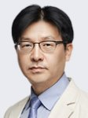 | 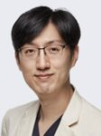 |  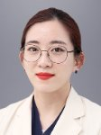 | 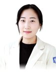 | ||
| 여의도성모 | 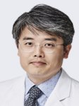 | 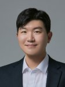 | ||||
| 의정부성모 | 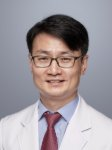 | 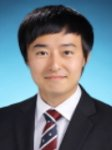 | ||||
| 부천성모 | 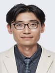 | 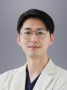 | ||||
| 은평성모 | 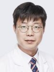 | |||||
| 인천성모 | 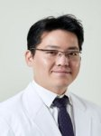 | 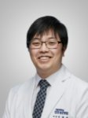 | ||||
| 성빈센트 | 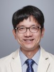 | 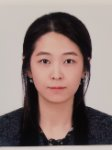 | ||||
| 대전성모 | 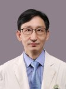 | 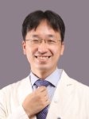 |
갑상선내분비외과
갑상선, 부갑상선, 부신 같은 내분비 기관에 생기는 종양과 대사 이상을 수술로 치료합니다. 대표 질환은 갑상선 결절, 갑상선암, 갑상선 종대, 부신 종양이며, 흉터를 줄이는 수술 방법을 여러 내분비 수술에 적용하고 있습니다.
| 병원 | 교수 | 부교수 | 조교수 | 임상교수 | 임상진료 | 임상 |
|---|---|---|---|---|---|---|
| 서울성모 | 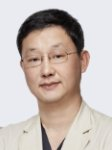 | 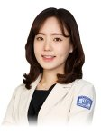  | 신승환 | |||
| 여의도성모 |  | |||||
| 의정부성모 | 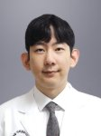 | |||||
| 부천성모 |  | 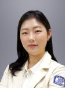 | ||||
| 은평성모 |  | |||||
| 인천성모 | 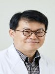 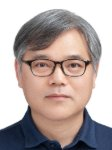 | | ||||
| 성빈센트 | 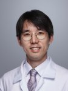 |
대장항문외과
대장, 직장, 항문에 생기는 질환을 진료합니다. 대장암은 진단을 위한 대장내시경부터 복강경 및 로봇 수술, 수술 뒤 회복, 항암치료와 표적치료, 추적 관찰까지 치료의 전 과정을 맡고 있습니다.
| 병원 | 교수 | 부교수 | 조교수 | 임상 | 임상진료 | 임상 |
|---|---|---|---|---|---|---|
| 서울성모 | 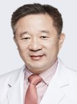 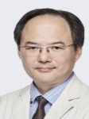 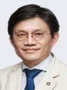 | 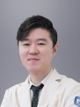 | ||||
| 여의도성모 | 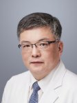 | |||||
| 의정부성모 | 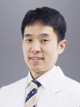 | 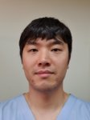 | 진건이 | |||
| 부천성모 | 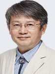 | 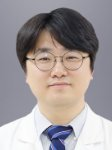 | 박미령 | |||
| 은평성모 | 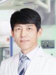 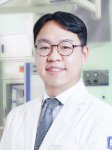 | 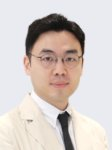 | 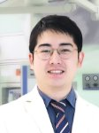 | 김창환 김동준 | ||
| 인천성모 | 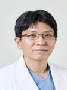 | 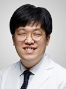 | 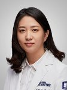 | 배세종 | ||
| 성빈센트 | 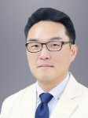 | |||||
| 대전성모 | 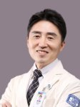 |
소아외과
15세 미만 어린이의 외과 질환을 치료합니다. 신생아외과, 소아청소년기외과, 소아외상, 소아장기이식이 주요 분야입니다. 선천성질환센터에서 여러 진료과와 함께 태아 때부터 선천성 기형을 진단하고 치료하며, 단장증후군 환자의 위장관 재활과 소장이식도 하고 있습니다.
| 병원 | 교수 | 임상 |
|---|---|---|
| 서울성모 | 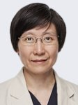 | 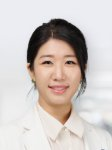 |
위장관외과
식도, 위, 십이지장, 소장에 생기는 악성, 양성, 기능성, 염증성 질환을 주로 수술로 치료합니다. 대표 질환은 식도암, 위암, 위장관기질종양, 위식도 역류 질환과 식도열공탈장, 고도비만과 대사 질환, 탈장입니다. 복강경 수술, 로봇 수술, 내시경 치료 같은 최소침습 치료를 하며, 암과 비만대사 질환은 다학제 팀이 함께 치료합니다.
| 병원 | 교수 | 부교수 | 조교수 | 임상 | 임상 | 임상진료 | 임상 |
|---|---|---|---|---|---|---|---|
| 서울성모 | 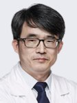 | ||||||
| 여의도성모 | 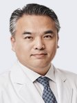 | 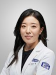 | |||||
| 의정부성모 | 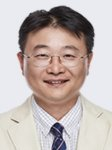 | 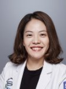 | |||||
| 부천성모 | 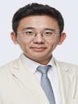 | 송형석 | |||||
| 은평성모 | |||||||
| 인천성모 | |||||||
| 성빈센트 | |||||||
| 대전성모 |
유방외과
유방 질환의 진단부터 치료 결정, 수술까지 맡습니다. 유방암은 병리과, 방사선종양학과, 종양내과, 성형외과, 재활의학과와 함께 다학제 진료를 하며, 수술과 함께 항암치료, 내분비치료, 표적치료, 방사선치료를 정하는 과정에 참여합니다.
| 병원 | 교수 | 부교수 | 조교수 | 임상 | 임상진료 | 임상 |
|---|---|---|---|---|---|---|
| 서울성모 | 최재원 | |||||
| 여의도성모 |  | |||||
| 의정부성모 | ||||||
| 부천성모 | ||||||
| 은평성모 | ||||||
| 인천성모 | | 박정영 김선희 임휴란 | ||||
| 성빈센트 | | |||||
| 대전성모 |  |
중환자외상외과
외과 중환자와 중증외상 환자의 집중 치료를 맡습니다. 2016년에 외과 안의 분과로 신설되었습니다. 패혈증, 외상, 급성 폐손상에 대한 임상 연구와 동물 실험, 다기관 연구를 하며, 전임의 수련 과정을 운영합니다.
| 병원 | 부교수 | 조교수 | 임상 | 임상진료 | 임상 |
|---|---|---|---|---|---|
| 서울성모 | | 임경무 | |||
| 의정부성모 | 김충근 | ||||
| 인천성모 | |
혈관이식외과
동맥, 정맥, 림프계 질환의 진단과 치료, 혈관접근로, 그리고 신장이식, 췌장이식, 소장이식 같은 장기이식을 맡습니다. 혈관 질환은 수술과 함께 혈관 내 치료를 하고, 혈관초음파로 진단과 시술을 합니다. 1969년 3월 25일 국내 첫 신장이식이 우리 교실에서 이루어졌습니다.
| 병원 | 교수 | 조교수 | 임상교수 | 임상 | 임상진료 | 임상 |
|---|---|---|---|---|---|---|
| 서울성모 |    |  |   | 변원재 윤영하 | ||
| 여의도성모 | ||||||
| 의정부성모 | ||||||
| 부천성모 | ||||||
| 은평성모 |  |   |  | 김준성 | ||
| 인천성모 | ||||||
| 성빈센트 |  |
입원전담 진료
외과 입원 환자의 진료를 전담합니다.
| 병원 | 임상 |
|---|---|
| 서울성모 |